Summary
The shared parts are built in the app, documented on the design site and captured for Figma. Nothing is pushed yet.
Selection
One picker look everywhere; buttons gained large and loading.
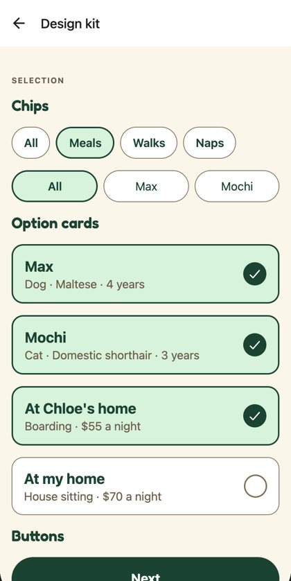
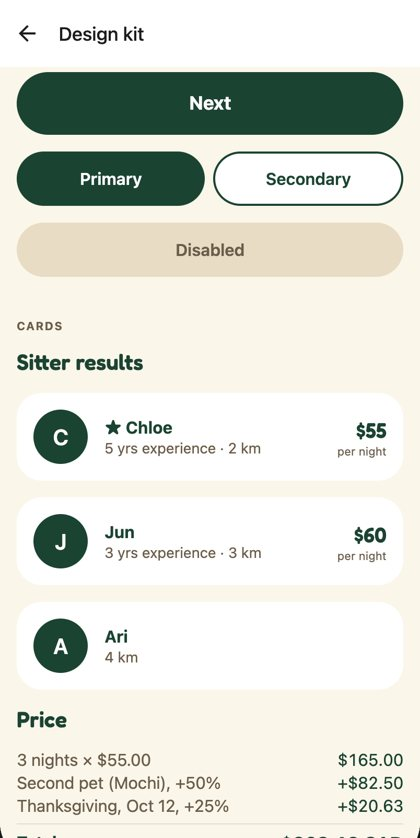
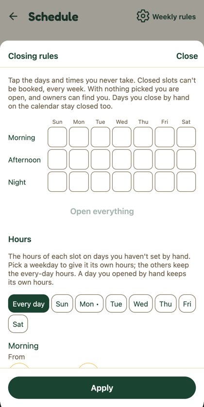
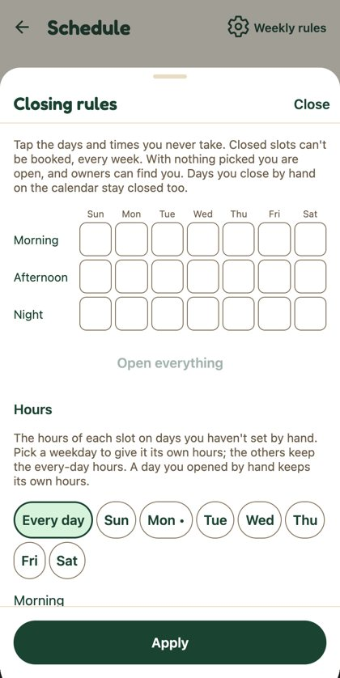
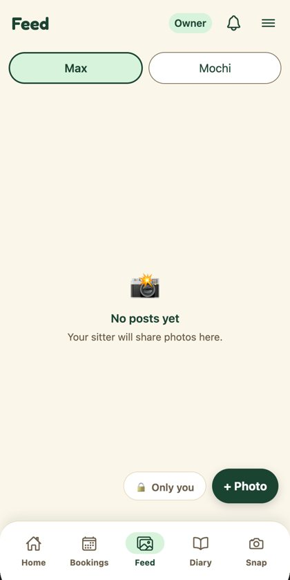
Search and cards
Sitter results are cards with the price on the right; the search has quick picks for km and dates.
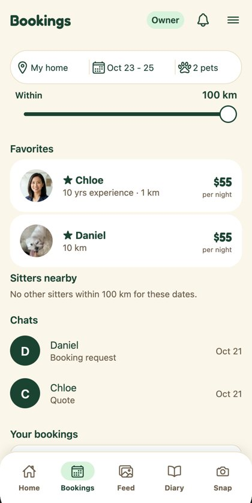
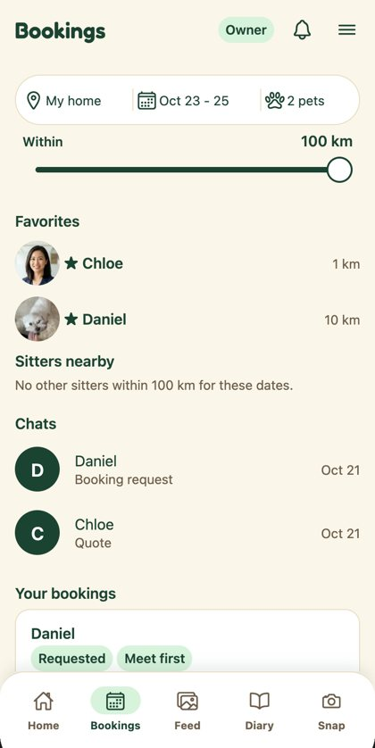
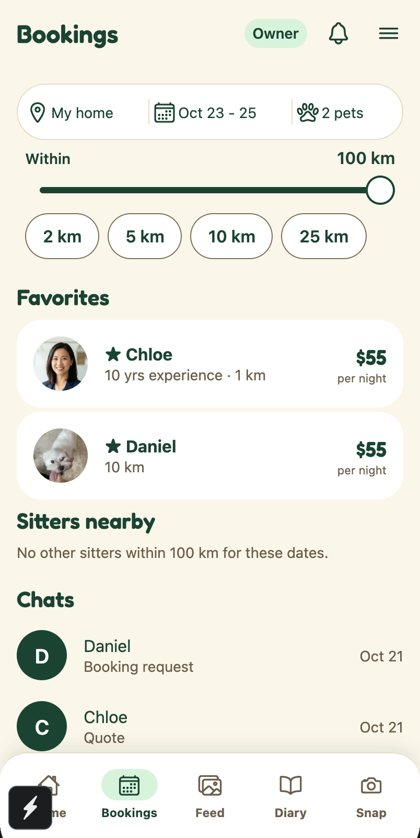
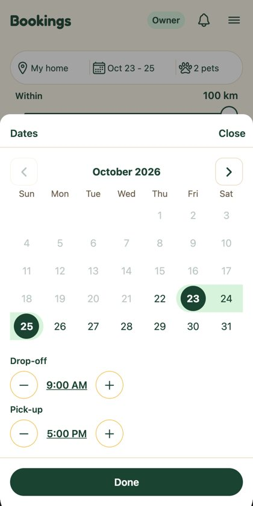
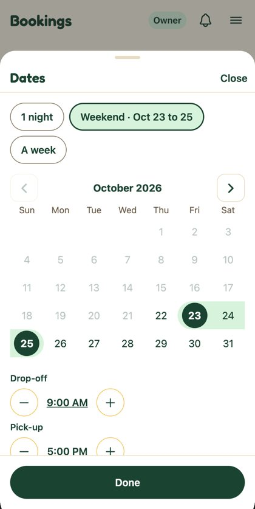
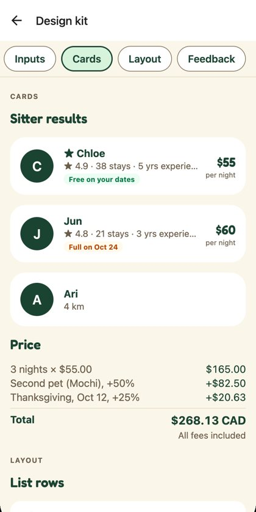
Layout and Settings
Settings is on list rows; one section-title style on nine more screens.
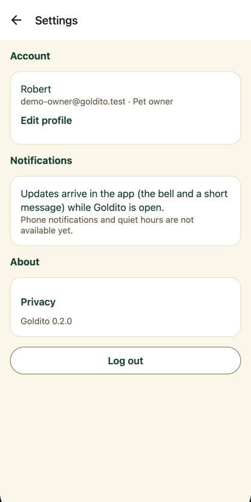
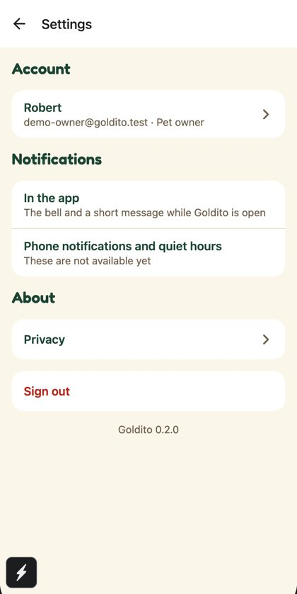
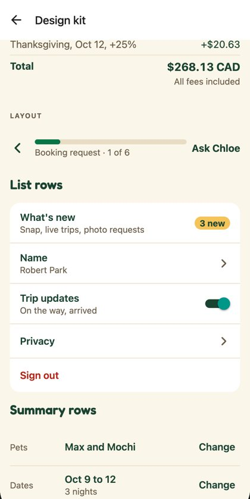
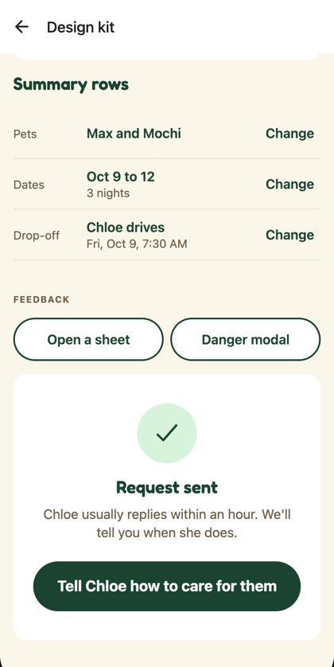
Feedback
Sheets rise and have a handle; toasts can Undo; DANGER follows Figma; Skeleton replaces spinners where used.
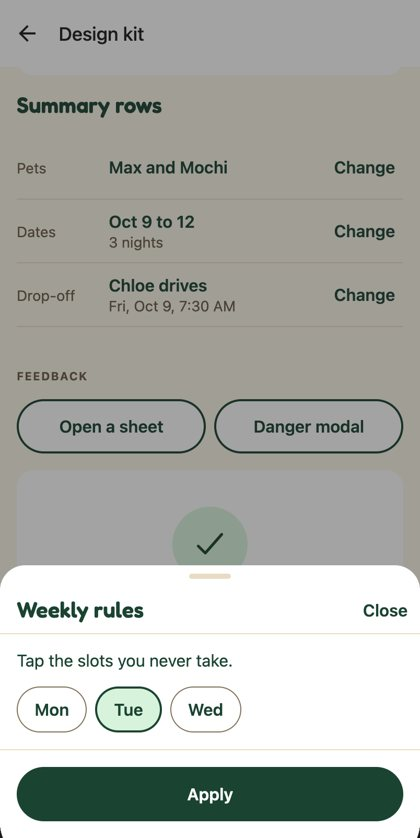
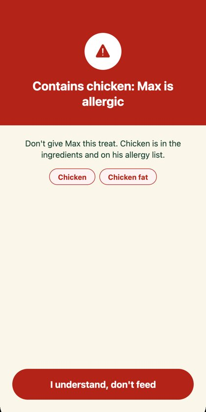
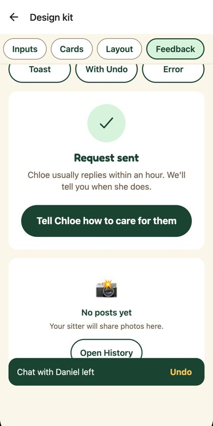
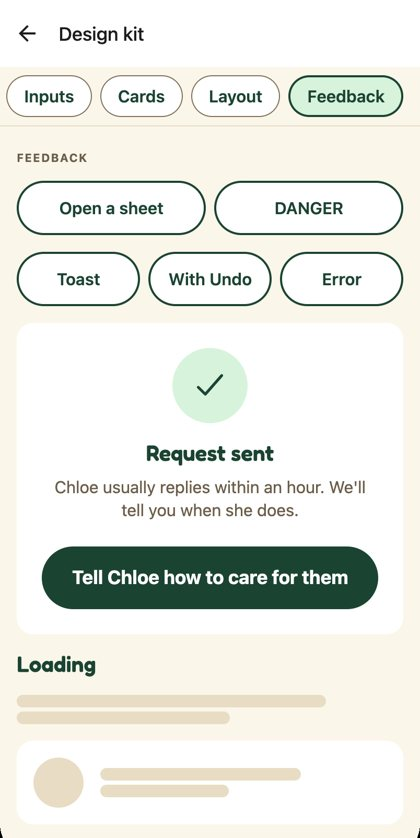
Booking flow sketch
The step-by-step booking request, playable from kit parts only (/dev/booking-flow). Nothing is sent; it's for the product call.
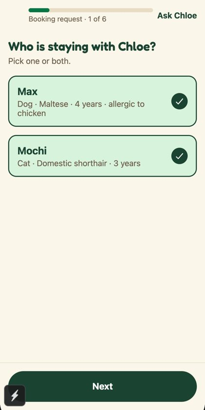
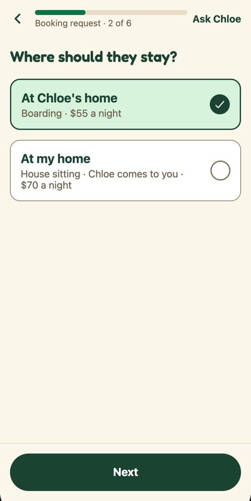
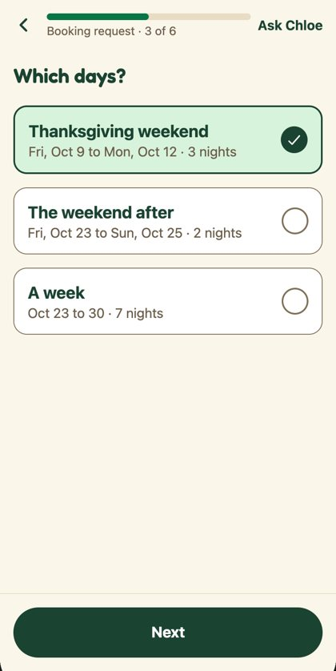
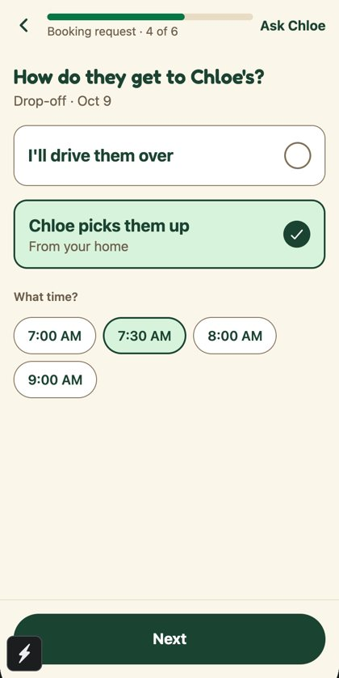
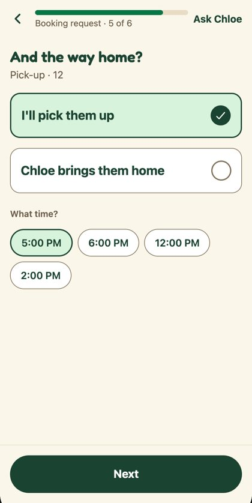
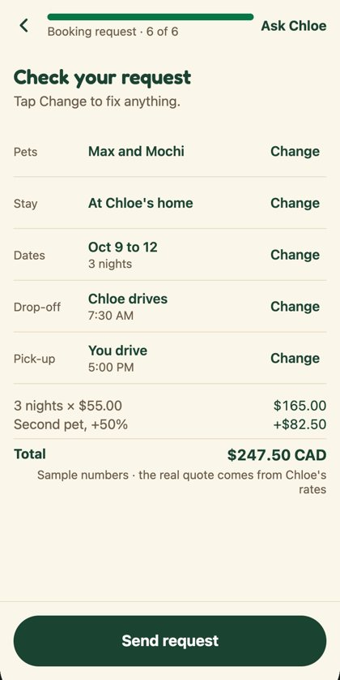
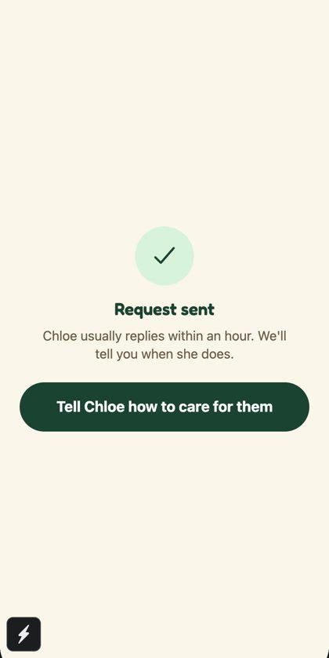
Checks
Everything that runs on this branch.
| Typecheck | Passes |
| Token check (CI) | Passes · 67 known cases, none new |
| Screen map (CI) | Up to date |
| e2e, full suite | 493 / 498 · the 5 were overlapping runs; all pass alone, the header test 3 / 3 |
| Bugs found and fixed by the suite | Sheet rise moved Done under the pointer (now CSS on web) · loading wrapper changed the button label's position (now only while loading) |
| Figma plugin | Kit: 10 boards, 134 instances · main run passes the mock |
Still open
Three need someone else; one is a merge order.
- Booking flow: product call (you and Minsik). The sketch is ready to play.
- Sitter facts: the card is ready; the search needs to return rating, stays and availability. Request for Minsik is in the Oct 22 doc.
- Icons and illustrations: waiting for the team's pick (table).
- Settings and #277: both edit Settings; whichever merges second takes a one-line fix.
For engineers
Run it, read the code panels, keep tokens clean.
EXPO_PUBLIC_DEV_ROUTES=1 npx expo start --web→/dev/kitand/dev/booking-flow- Every family on kit.html has a "For engineers: code" panel: import, usage, props (they mirror the Figma variants).
npm run check:tokensin CI: no raw hex, numeric font sizes or emoji labels outsidetheme/.- New parts:
ui/selectable,OptionCard,StepHeader,SectionTabs,ListRow,SummaryRow,PriceBreakdown,ResultState,Skeleton,SectionTitle,SitterResultCard,useReduceMotion.